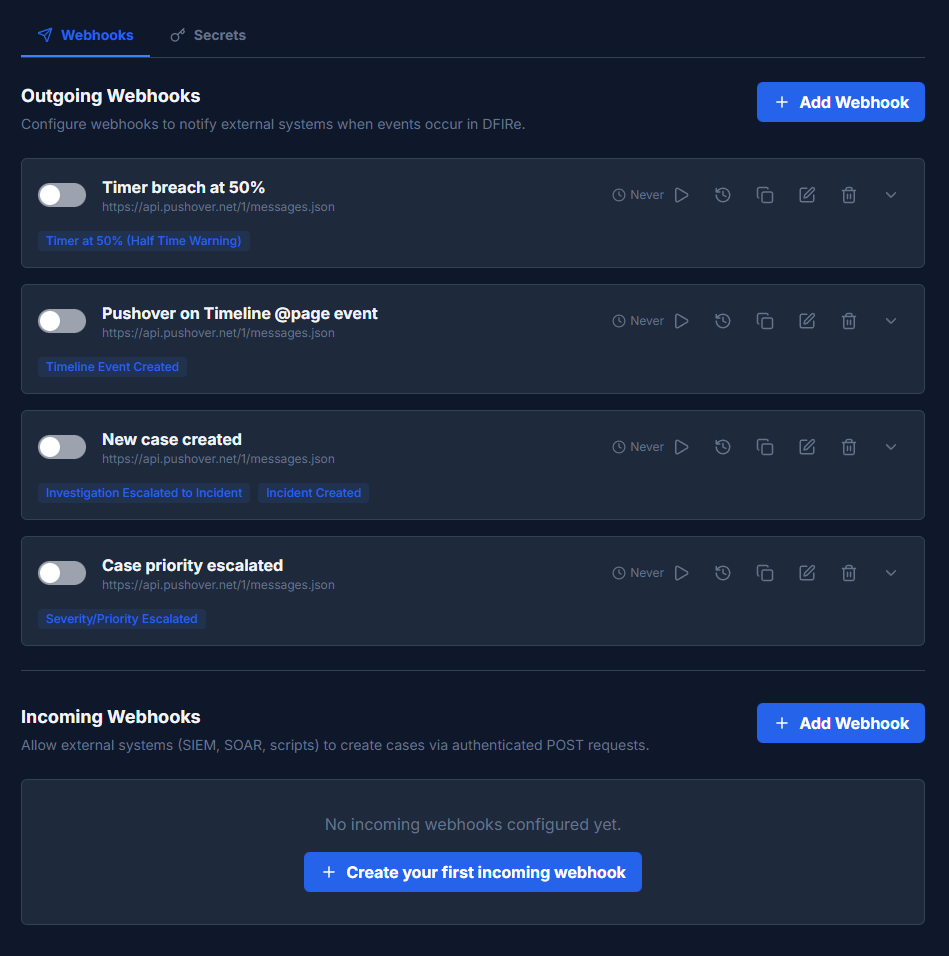
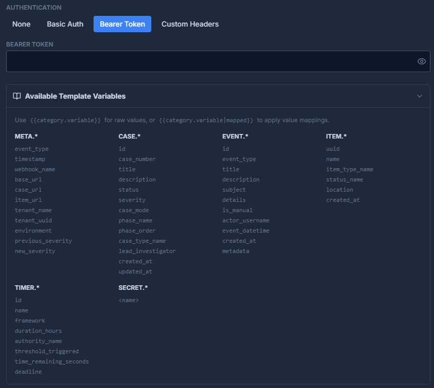
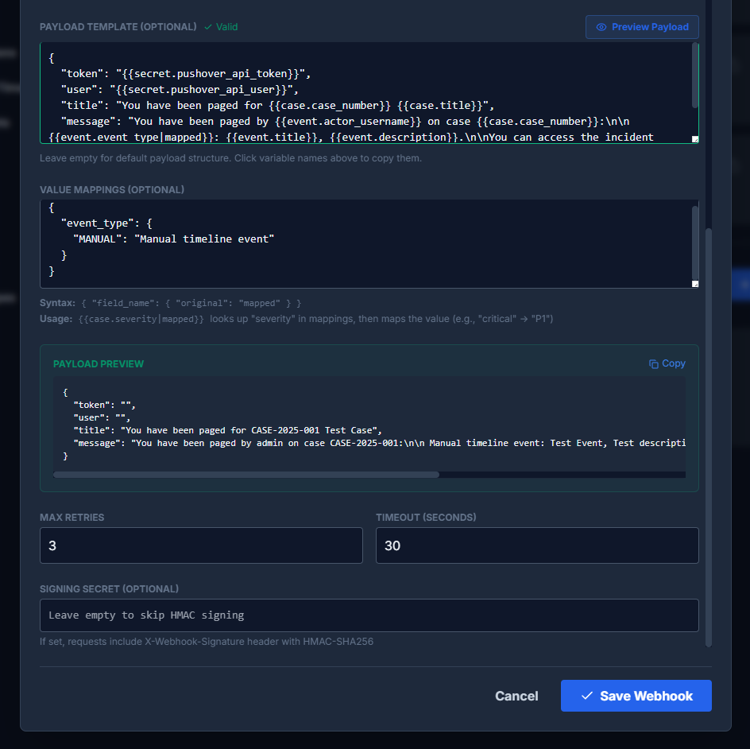
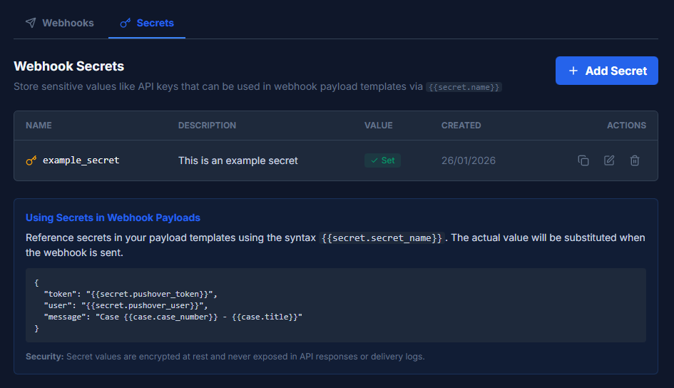
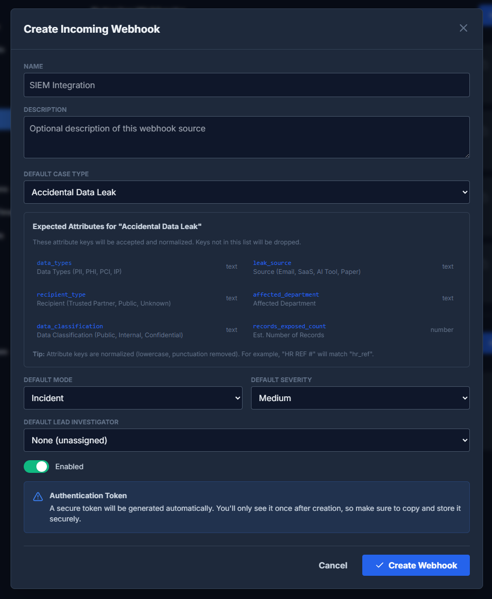

Webhooks
Integrate DFIRe with external systems using outgoing webhooks for notifications and incoming webhooks for automated case creation.
Overview
DFIRe provides two types of webhooks:
- Outgoing Webhooks - Send notifications to external systems when events occur in DFIRe
- Incoming Webhooks - Allow external systems (SIEM, SOAR, scripts) to create cases in DFIRe
Additionally, Webhook Secrets allow you to store sensitive values like API keys that can be referenced in outgoing webhook payloads.
Webhook configuration is found in Settings > Webhooks. The page has two tabs: Webhooks (for outgoing and incoming webhooks) and Secrets (for stored credentials).
Outgoing Webhooks
Outgoing webhooks send HTTP POST requests to a configured URL when specific events occur in DFIRe. Use them to integrate with notification services (Pushover, PagerDuty), ticketing systems (Jira, ServiceNow), SIEMs, or custom automation.
Creating an Outgoing Webhook
- Click "Add Webhook" in the Outgoing Webhooks section
-
Configure basic settings
- Name: Descriptive name for the webhook
- Endpoint URL: The URL to receive webhook payloads
- Description: Optional description of what this webhook does
-
Select trigger events
Choose which events should trigger this webhook.
-
Optionally set a content filter
For timeline events, you can filter by content using a regex pattern.
- Configure authentication
- Customize the payload template
- Save the webhook
Trigger Events
Select one or more events that should trigger the webhook:
| Event | Description |
|---|---|
| Incident Created | A new incident case was created |
| Investigation Created | A new investigation case was created |
| Case Closed | A case was closed |
| Case Archived | A case was archived |
| Case Reopened | A closed case was reopened |
| Investigation Escalated to Incident | An investigation was escalated to incident mode |
| Severity/Priority Escalated | Case severity was increased (e.g., medium to high) |
| Severity/Priority Downgraded | Case severity was decreased |
| Incident Phase Changed | Incident moved to a different response phase |
| Timeline Event Created | A new timeline event was added to a case |
| Evidence Added | New evidence item was added to a case |
| Evidence Status Changed | Evidence item's investigation step changed |
| Timer at 50% (Half Time Warning) | Compliance timer reached 50% of its duration |
| Timer at 25% (Quarter Time Warning) | Compliance timer reached 75% elapsed (25% remaining) |
| Timer at 10% (Critical Warning) | Compliance timer reached 90% elapsed (10% remaining) |
| Timer Breached (Deadline Passed) | Compliance timer deadline has passed |
| Test Event (Manual Testing) | Used for testing webhook configuration |
Content Filter
For timeline events, you can specify a regex pattern to filter which events trigger the webhook. For example, setting the filter to @page will only trigger the webhook when timeline events contain "@page" in the subject or details.
This is useful for implementing paging or alerting based on specific keywords in timeline entries.
Authentication
DFIRe supports four authentication methods for outgoing webhooks:
| Method | Description |
|---|---|
| None | No authentication. Use when the endpoint doesn't require auth or when credentials are in the payload. |
| Basic Auth | HTTP Basic Authentication. Provide username and password. |
| Bearer Token | Sends an Authorization: Bearer <token> header. Provide the token value. |
| Custom Headers | Add custom HTTP headers. Useful for API keys sent in headers (e.g., X-API-Key). |
Payload Templates
Customize the JSON payload sent to your endpoint using template variables. If you leave the payload template empty, DFIRe sends a default payload structure.
Template Variable Syntax
Use double curly braces to insert variable values:
{{category.variable}}- Insert the raw value{{category.variable|mapped}}- Apply value mappings before inserting
Available Variables
Variables are organized by category:
META.* (Request Metadata)
meta.event_type | The event that triggered this webhook |
meta.timestamp | When the event occurred (ISO 8601) |
meta.webhook_name | Name of this webhook configuration |
meta.base_url | DFIRe instance base URL |
meta.case_url | Direct URL to the case |
meta.item_url | Direct URL to the evidence item (if applicable) |
meta.tenant_name | Organization name |
meta.tenant_uuid | Tenant identifier |
meta.environment | Environment (production, development) |
meta.previous_severity | Previous severity (for escalation events) |
meta.new_severity | New severity (for escalation events) |
CASE.* (Case Information)
case.id | Case UUID |
case.case_number | Case number (e.g., CASE-2026-001) |
case.title | Case title |
case.description | Case description |
case.status | Case status (open, closed, archived) |
case.severity | Severity level (info, low, medium, high, critical) |
case.case_mode | Case mode (investigation, incident) |
case.phase_name | Current incident phase name |
case.phase_order | Current incident phase order |
case.case_type_name | Case type name |
case.lead_investigator | Lead investigator username |
case.created_at | Case creation timestamp |
case.updated_at | Last update timestamp |
EVENT.* (Timeline Event Information)
event.id | Event UUID |
event.event_type | Event type (MANUAL, AUTO, etc.) |
event.title | Event title/subject |
event.description | Event description |
event.subject | Event subject |
event.details | Event details |
event.location | Location information |
event.is_manual | Whether this is a manual entry |
event.actor_username | User who created the event |
event.event_datetime | When the event occurred |
event.created_at | When the event was recorded |
event.metadata | Additional event metadata (JSON) |
ITEM.* (Evidence Item Information)
item.uuid | Evidence item UUID |
item.name | Evidence item name |
item.item_type_name | Evidence type name |
item.status_name | Current investigation step |
item.created_at | When the item was added |
TIMER.* (Compliance Timer Information)
timer.id | Timer ID |
timer.name | Timer name (e.g., "GDPR 72h") |
timer.framework | Compliance framework |
timer.duration_hours | Total duration in hours |
timer.authority_name | Regulatory authority |
timer.threshold_triggered | Which threshold was triggered (50, 25, 10, 0) |
timer.time_remaining_seconds | Seconds remaining until deadline |
timer.deadline | Deadline timestamp |
SECRET.* (Stored Secrets)
Reference secrets stored in the Secrets tab:
{{secret.<name>}}- Replaced with the secret value at send time
For example, {{secret.pushover_api_token}} inserts the value of a secret named "pushover_api_token".
Value Mappings
Value mappings transform field values before inserting them into the payload. This is useful when the receiving system expects different values than DFIRe uses.
Configuration
Define mappings as a JSON object where keys are field names and values are mapping dictionaries:
{
"severity": {
"info": -2,
"low": -1,
"medium": 0,
"high": 1,
"critical": 2
},
"event_type": {
"MANUAL": "Manual timeline event",
"AUTO": "Automatic system event"
}
}Usage
Use the |mapped filter to apply mappings:
{{case.severity}}outputs:critical{{case.severity|mapped}}outputs:2(using the mapping above)
This is especially useful for integrating with services like Pushover that use numeric priority levels, or for translating DFIRe field values to match your organization's terminology.
Payload Preview
Click "Preview Payload" to see how your template will render with sample data. The preview shows the actual JSON that would be sent, with variables replaced by example values. This helps verify your template syntax and mappings before saving.
Additional Outgoing Webhook Settings
Retry Configuration
- Max Retries: Number of retry attempts for failed deliveries (default: 3)
- Timeout (Seconds): How long to wait for a response (default: 30)
HMAC Signing
Optionally configure a signing secret to allow the receiving endpoint to verify that requests came from DFIRe:
- If set, DFIRe includes an
X-Webhook-Signatureheader with an HMAC-SHA256 signature - The signature is computed over the request body using your secret
- Leave empty to skip signing
Verifying Signatures
# Python example
import hmac
import hashlib
def verify_signature(payload_body, signature_header, secret):
expected = hmac.new(
secret.encode(),
payload_body,
hashlib.sha256
).hexdigest()
return hmac.compare_digest(expected, signature_header)Webhook Secrets
Store sensitive values like API keys and tokens securely, then reference them in webhook payloads.
Creating a Secret
- Go to Settings > Webhooks > Secrets tab
- Click Add Secret
- Enter a name (used to reference the secret in templates)
- Enter an optional description
- Enter the secret value
- Click Save
Using Secrets in Payloads
Reference secrets using the syntax {{secret.secret_name}}. The actual value is substituted when the webhook is sent:
{
"token": "{{secret.pushover_token}}",
"user": "{{secret.pushover_user}}",
"message": "Case {{case.case_number}} - {{case.title}}"
}Security
- Secret values are encrypted at rest using the
CREDENTIAL_ENCRYPTION_KEY - Values are never exposed in API responses or delivery logs
- Only the secret name and description are visible after creation
- You can update or delete secrets, but cannot view the stored value
Incoming Webhooks
Incoming webhooks allow external systems to create cases in DFIRe via authenticated POST requests. Use them to integrate with SIEMs, SOAR platforms, monitoring tools, or custom scripts.
Creating an Incoming Webhook
- Click "Add Webhook" in the Incoming Webhooks section
-
Configure basic settings
- Name: Descriptive name (e.g., "SIEM Integration")
- Description: Optional description of the webhook source
-
Select Default Case Type
Choose which case type to use for cases created via this webhook. The expected attributes for that case type are displayed to help you map fields.
-
Configure defaults
- Default Mode: Investigation or Incident
- Default Severity: Severity for cases that don't specify one
- Default Lead Investigator: User to assign as lead (optional)
- Enable the webhook
-
Click "Create Webhook"
An authentication token is generated automatically. Copy it immediately - it's only shown once.
Expected Attributes
When you select a case type, DFIRe displays the expected attribute keys based on that case type's custom fields. The incoming payload's attributes field should use these keys.
Attribute keys are normalized (lowercase, punctuation removed), so "HR REF #" becomes "hr_ref". Keys not in the list are dropped.
Using the Incoming Webhook
Send a POST request to create a case:
curl -X POST https://dfire.example.com/api/webhooks/incoming/{webhook-uuid}/ \
-H "Content-Type: application/json" \
-H "Authorization: Bearer YOUR_AUTH_TOKEN" \
-d '{
"title": "Alert: Suspicious Login Activity",
"description": "Multiple failed login attempts detected",
"severity": "high",
"source": "SIEM",
"external_id": "ALERT-12345",
"attributes": {
"source_ip": "192.168.1.100",
"target_user": "admin@example.com",
"attempt_count": 15
}
}'Request Fields
| Field | Required | Description |
|---|---|---|
title |
Yes | Case title |
description |
No | Case description |
severity |
No | critical, high, medium, low, info (uses default if omitted) |
mode |
No | investigation or incident (uses default if omitted) |
source |
No | Source system identifier (stored in case metadata) |
external_id |
No | ID from the source system (for deduplication) |
attributes |
No | Object with case type custom field values |
Response
{
"status": "created",
"case": {
"id": "550e8400-e29b-41d4-a716-446655440000",
"case_number": "CASE-2026-043",
"url": "https://dfire.example.com/cases/550e8400..."
}
}Duplicate Prevention: If you provide an external_id and a case with that ID already exists for this webhook, DFIRe returns the existing case instead of creating a duplicate.
Example: Pushover Notifications
This example shows how to send mobile push notifications via Pushover when someone adds "@page" to a timeline event.
1. Create Secrets
Store your Pushover credentials in Webhook Secrets:
- Create a secret named
pushover_api_tokenwith your Pushover application token - Create a secret named
pushover_api_userwith your Pushover user key
2. Create the Webhook
- Name: Pushover on Timeline @page event
- Endpoint URL:
https://api.pushover.net/1/messages.json - Trigger Events: Timeline Event Created
- Content Filter:
@page - Authentication: None (credentials are in the payload)
3. Configure the Payload Template
{
"token": "{{secret.pushover_api_token}}",
"user": "{{secret.pushover_api_user}}",
"title": "You have been paged for {{case.case_number}} {{case.title}}",
"message": "You have been paged by {{event.actor_username}} on case {{case.case_number}}:\n\n{{event.event_type|mapped}}: {{event.title}}, {{event.description}}.\n\nYou can access the incident here: {{meta.case_url}}",
"priority": "{{case.severity|mapped}}"
}4. Configure Value Mappings
{
"severity": {
"info": -2,
"low": -1,
"medium": 0,
"high": 1,
"critical": 2
},
"event_type": {
"MANUAL": "Manual timeline event"
}
}Now, when anyone adds a timeline event containing "@page", the on-call team receives a push notification with case details and a direct link.
Webhook Management
Testing Webhooks
Use the play button on a webhook card to send a test event. This fires the "Test Event (Manual Testing)" trigger with sample data.
Enabling/Disabling
Toggle the switch on a webhook card to enable or disable it without deleting the configuration. Disabled webhooks are not triggered.
Duplicating Webhooks
Use the copy button to duplicate a webhook configuration. This is useful for creating similar webhooks with minor variations.
Delivery History
Click on a webhook to view recent delivery attempts showing:
- Success or failure status
- HTTP response code
- Response time
- Timestamp
Retry Behavior
Failed deliveries are retried automatically with exponential backoff. After the configured number of retries, the delivery is marked as failed but the webhook remains active for future events.
Security Best Practices
- Use HTTPS: Always use HTTPS endpoints for webhooks
- Use Secrets: Store API keys and tokens in Webhook Secrets rather than hardcoding in templates
- Enable Signing: Configure a signing secret and verify signatures in your receiving application
- Rotate Tokens: Periodically regenerate incoming webhook authentication tokens
- Restrict Access: If possible, whitelist DFIRe's IP address in your receiving application
- Monitor Failures: Review delivery history for failures that might indicate configuration issues